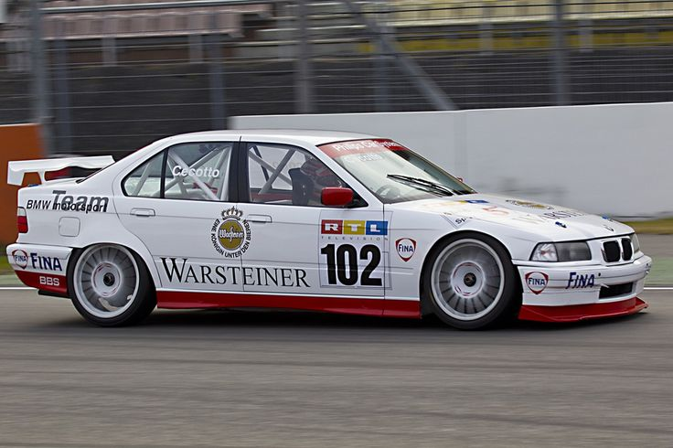

1990 BMW E30 325i handbak 4 cilinder 215PK 960KG aluminium.
1997 BMW 320i automaat 6 cilinder 305PK 1000KG polyester.

2002 BMW 330Ci automaat 6 cilinder 1000KG 347PK polyester.

2006 BMW 325i clubsport automaat 6 cilinder 360PK 1200KG polyester.

2010 BMW M5 E60 automaat 10 cilinder 500PK 1400KG gediskwalificeerd door FIA.

2013-2017 BMW M240i clubsport automaat 6 cylinder 1300KG.

2020 BMW M2 CS automaat 6 cilnder 450PK 1300KG polyester.